算法乐园
计算机组成原理
第一章 计算机系统概述
程序被翻译成不同的格式
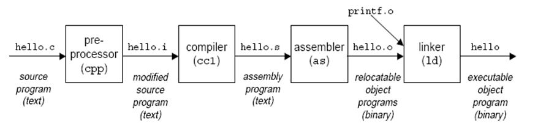
- 从
hello.c到目标文件的转化是由编译系统完成unix>gcc -o hello hello.c - 编译系统是由：预处理器、编译器、汇编器和链接器构成
- 翻译过程是由：预处理、编译、汇编和链接这四个阶段完成
计算机系统基本执行结构
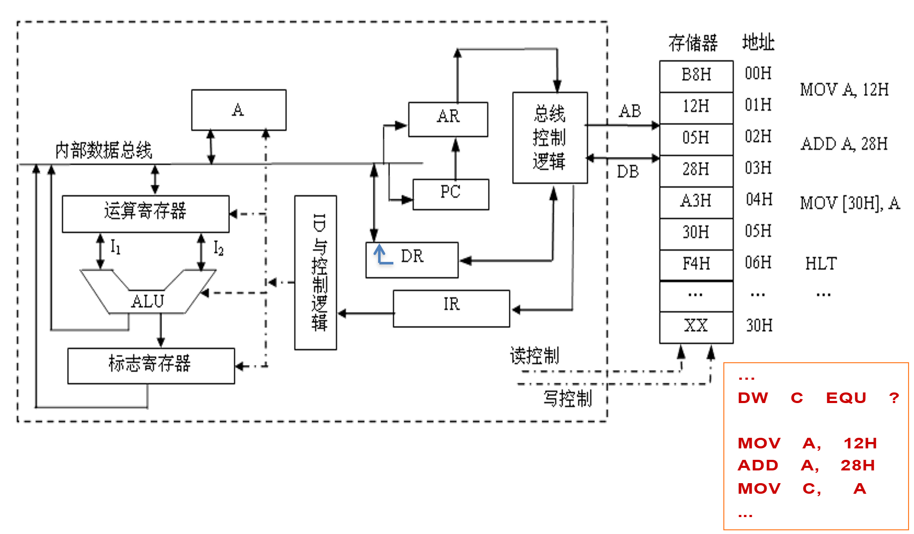
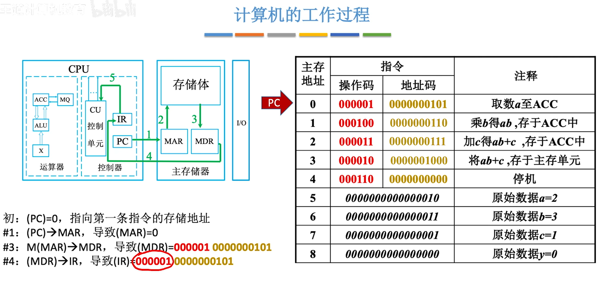
| 缩写 | 英文 | 含义 |
|---|---|---|
| IR | instruction register | 指令寄存器,计算机中用于存储当前正在执行的指令的寄存器。 |
| PC | program counter | 程序计数器,用于存储处理器当前（或下一条）指令的地址。 |
| AR | address register | 地址寄存器,用来存放指令或操作数的地 址。是一个暂存单元。 |
| DR | data register | 数据寄存器 |
| MAR | Memory address register | 存储地址寄存器 |
| MDR | Memory data register | 存储数据寄存器 |
| ACC | Accumulator | 累加器 |
| MQ | Multiplier-Quotient Register | 乘商寄存器，在乘、除运算时，用于存放操作数或运算结果。 |
| ALU | arithmetic logic unit | 算术逻辑单元：计算机中央处理器的一个电路，用于执行基本的数学计算 |
| X | 通用的操作数寄存器 | |
经典冯·诺依曼计算机框架
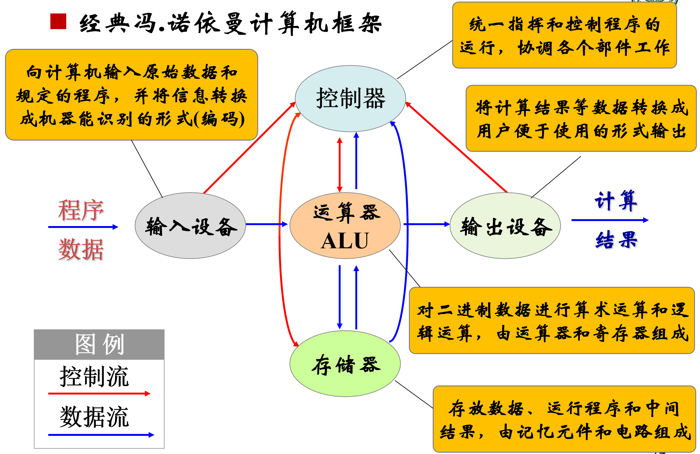
现代计算机组成
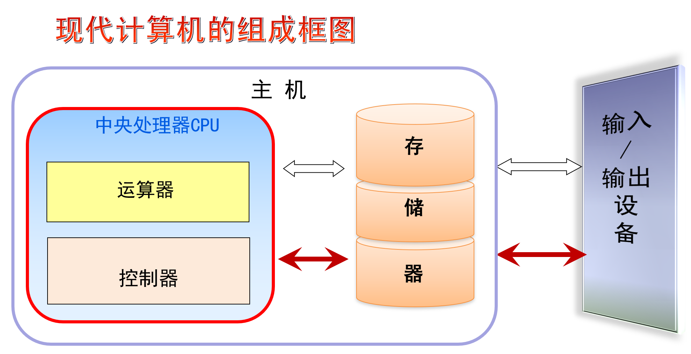
主存储器
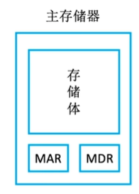
| MAR | Memory address register | 存储地址寄存器 |
|---|---|---|
| MDR | Memory data register | 存储数据寄存器 |
读操作：CPU把想要的数据地址放在MAR，然后在MDR取走数据
写操作：CPU把想要写的地址放在MAR，然后把数据放在MDR
存储单元是一串二进制代码，也称存储字
存储元件指单个二进制位
CPU
处理器(CPU - Central Processing Unit)
功能：执行程序(Execute programs)
组成：Control Unit + Data path
Control Unit(控制单元):
功能：对指令进行译码，产生控制信号
Datapath (数据通路):
功能：完成指令的执行
核心：ALU(Arithmetic Logic Unit)+Register(寄存器)
①ALU用来执行算术、逻辑运算
②寄存器用来存储临时的数据或控制信息
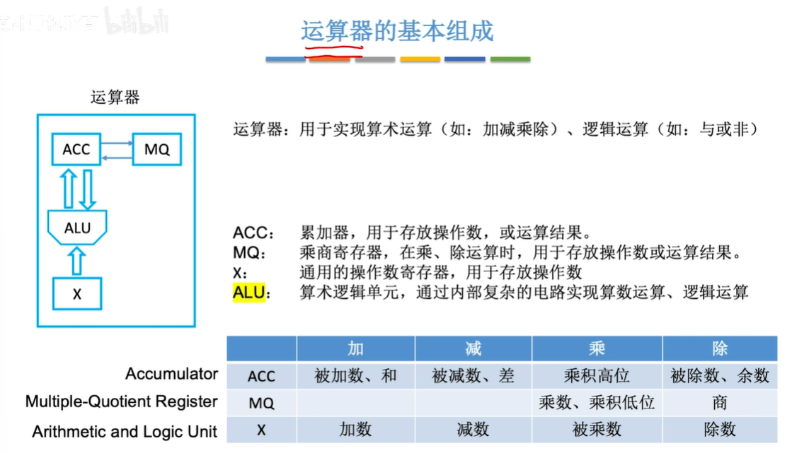
CPU time = 程序包含的指令数量 × CPI × 时钟周期
三个因素之间的相互影响?
- CPI的减少可能会增加时钟周期的长度
- 缩短时钟周期可能会增加指令的条数
- 改变IS以减少指令条数会使时钟周期变长
- 即使是在同一台机器上解决同一个问题，最少指令条数的程序不一定执行的最快
运算器的组成部分
运算器是计算机中执行各种算术和逻辑运算操作的部件，通常由以下几个部分组成：
- 算术逻辑单元（ALU）：负责执行基本的算术和逻辑运算，如加、减、乘、除、与、或、非、异或等。
- 累加器（AC）：用来暂存源操作数和运算结果。
- 数据缓冲寄存器（DR）：用来暂存由内存读/写的一条指令或数据。
- 状态寄存器（PSW）：用来保存状态标志和控制标志，如进位标志、溢出标志等。
- 通用寄存器组：用来存放程序中用到的数据，可以被软件设计者访问。
- 内部总线：用来连接各个部件的信息通道，传输运算过程中的数据。
几种驱动方式
控制流驱动方式、数据流控制方式、微程序控制方式、多指令多数据流方式是计算机的不同工作方式，它们各有特点和优缺点。下面我简单介绍一下：
- 控制流驱动方式是指由指令去控制数据的存取和运算，即指令→数据。这是冯·诺依曼机的基本工作方式，也是最常见的计算机工作方式。控制流驱动方式的优点是结构简单，易于实现；缺点是指令执行顺序固定，不适合并行处理。
- 数据流控制方式是指由数据去触发指令的执行，即数据→指令。这是一种非冯·诺依曼机的工作方式，也称为数据流计算机。数据流控制方式的优点是能够充分利用并行性，提高计算效率；缺点是结构复杂，难以实现。
- 微程序控制方式是指用一组微指令来实现一条机器指令的功能，即机器指令→微指令。这是一种在硬件和软件之间增加了一层抽象的工作方式，也称为微程序计算机。微程序控制方式的优点是能够扩展和修改指令系统，提高兼容性；缺点是增加了执行时间，降低了速度。
- 多指令多数据流方式是指同时执行多条不同的指令，并对应地处理多个不同的数据，即多条指令→多个数据。这是一种利用多个处理器并行工作的工作方式，也称为多处理机或并行计算机。多指令多数据流方式的优点是能够大幅提高计算性能，适合处理复杂问题；缺点是需要协调各个处理器之间的通信和同步，增加了设计难度。
相联存储器
是一种特殊的存储器，它可以根据存储内容而不是地址来进行存取。相联存储器的优点是可以快速地查找数据，因为它可以同时比较多个存储单元的内容。相联存储器的缺点是成本高，容量小，复杂度高。
相联存储器的工作原理是这样的：
- 首先，从要查找的数据中提取出关键字（key），这个关键字是用来匹配存储单元中的内容的。
- 然后，将关键字和所有存储单元中的标记（tag）进行并行比较，如果相等，就说明找到了匹配的数据。
- 最后，根据比较结果，从存储单元中读出或写入相应的数据。
相联存储器可以用在不同的场合，例如：
- 在高速缓冲存储器（cache）中，用来实现快速地判断CPU要访问的数据是否在cache中，以及在哪个位置。
- 在虚拟存储器中，用来作为段表、页表或快表（TLB）的存储器，用来实现快速地转换虚拟地址和物理地址。
- 在数据库和知识库中，用来实现快速地检索和查询数据。
衡量计算机性能的指标
计算机有两种不同的性能
完成单个任务的时间
响应时间(response time)：完成单个任务所需的总时间
- 执行时间(execution time)
- 等待时间或时延(latency)
单位时间完成的任务量(Tasks per day, hour, sec, ns. .. )
- 吞吐率(throughput)：单位时间内所完成的任务量
- 带宽(bandwidth)
不同应用场合用户关心的性能不同
- 吞吐率高的场合——多媒体应用(音/视频播放要流畅)
- 响应时间短的场合——事务处理系统(存/取款的速度要快)
- 吞吐率高且响应时间短的场合——ATM、文件服务器、Web服务器等
CPU 性能的影响因素
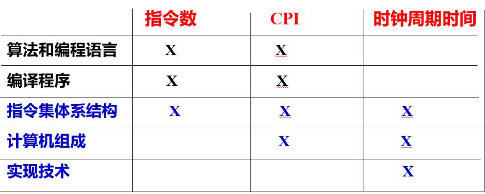
| 名称 | 影响因素 | 如何影响 |
|---|---|---|
| 算法 | 指令数、CPI | 算法决定源程序的指令条数，因此决定了处理器执行的指令条数。算法由于对慢速或快速指令的不同倾向性而同样影响了CPI。 |
| 编程语言 | 指令数、CPI | 由于编程语言中的语句被翻译成CPU指令，而后者决定了指令条数，因此编程语言势必会影响指令条数。由于编程语言的自身特点，它可能同样影响CPI。例：强支持数据抽象的语言(如Java)要求间接调用，而这往往会用到具有高CPI的指令 |
| 编译器 | 指令数、CPI | 编译器的效率对指令数及每条指令的平均周期数均有影响，这是因为编译器决定了从源语言语句到机器指令的翻译。编译器的作用可以非常复杂，同时通过复杂的方式影响CPI |
| 指令集体系结构 | 指令数、时钟频率、CPI | 指令集的结构对CPU性能的这三个方面均有影响，因为它影响了函数需要的指令、每条指令需要周期及CPU总的时钟频率 |
小结
性能定义：用程序响应时间或系统吞吐率表示系统整体性能
- 响应时间（执行时间）的倒数 Performance = 1 / Execution Time
CPU性能的测量(用户程序的CPU执行时间)
- 一般把程序的响应时间划分成CPU时间和等待时间，CPU时间又分成用户CPU时间和系统CPU时间
- 因为操作系统对自己所花费的时间进行测量时，不十分准确，所以对CPU性能的测算一般通过测算用户CPU时间来进行
各种性能指标之间的关系（必考）
- CPU执行时间 = CPU时钟周期数 × 时钟周期
- 时钟周期和时钟频率互为倒数
- CPU时钟周期数 = 程序指令数×平均每条指令时钟周期数CPI
MIPS数有些情况下不能说明问题，没有可比性！
- MIPS高可能是因为程序的指令数量多,单个指令执行较快,实际的总运行时间可能更长
针对特定指令集体系结构，提高计算机性能的主要途径有：
- 提高时钟频率(第四章处理器中的流水线技术)
- 优化处理器中数据通路结构以降低CPI(第四章 处理器)
- 用编译优化措施来减少指令条数或降低指令复杂度(第二章 指令系统 )
影响系统性能的硬件技术指标
1）主频
- 定义：CPU的工作节拍是由时钟控制的，时钟不断产生固定频率的时钟脉冲，这个时钟的频率就是CPU的主频。
- 主频越高，CPU的工作节拍就越快，运算速度就越高
- 主频通常用一秒钟内处理器所能发出电子脉冲数来表示，单位一般为GHz
- 芯片的功耗与频率成正比
2）运算速度
定义：每秒钟所能执行的指令条数
计量单位：
- MIPS(百万条指令每秒)
- MFLOPS(百万次浮点运算每秒)、GFLOPS/PFLOPS
几种计算方法：
- 吉布森混合法：各类指令根据出现频率加权求平均
- 计算各种指令的执行速度
- 计算典型程序的运算速度
- 模型分析和模拟等其他方法
3）运算精度
- 计算机能直接处理的二进制位数
- 一般和CPU中存储的数据寄存器的位数是相同。位数越多，精度越高
- 参与运算的操作数的基本位数称之为基本字长 。早期的微机字长为8位或16位，现为32位或64位
- 存储容量
- 主存越大，处理问题的速度越快
- 与辅存交换次数越少，访存效率越高
并行计算
Amdahl定律
Amdahl定律说明什么?
省流:并行计算没有前途
对计算机系统的某个部分采用并行优化措施后所获得的计算机性能的提高是有上限的，这个上限取决于串行部分所占的比例
Gustafson公式
- 简便起见，设总时间为1，则
- 在串行处理器上完成该任务的时间为
Gustafson公式说明什么?
省流:并行计算有前途
- 任何足够大的任务均可被有效的并行化
- 推论：只要问题规模可扩展，并行所带来的加速比就可扩展
打破Amdahl定律的一个假设：问题规模不变,相对于Amdahl，Gustafson只是换了个看问题的角度而已，但超级计算机研制的道路豁然开朗
第二章 指令系统和数据存储
指令系统概述
兼容性：
- 向上（下）兼容：按某档机器编制的程序，不加修改的就能运行于比它高（低）档的机器
- 向前（后）兼容：按某个时期投入市场的某种型号机器编制的程序，不加修改就能运行于在它之前(后)投入市场的机器
两种类型指令系统计算机：CISC与RISC
Complex Instruction Set Computer 出现较早，大而全
Reduced Instruction Set Computer John cock & 小而精
指令格式
与指令设计相关的问题
- 操作码组成：操作码个数/种类/复杂度 如：Load/Store/INC/Branch 四种指令已足够编制任何可计算程序，但编写的程序会很长
- 数据类型：多种数据类型可执行操作 如：字节、半字、字等
- 指令格式：指令长度/地址码个数/各字段长度
- 通用寄存器：个数/功能/长度
- 寻址方式：操作数地址的指定/计算方式
- 下条指令地址的确定：顺序(PC+4)、转移(目的地址)
操作码长度和指令长度什么关系？
- 指令长度是否可变，与操作码长度是否可变没有绝对联系,“定长操作码、不一定是定长指令字”
- 关注程序代码长度时：变长指令字、变长操作码 (为了把程序都能放到cache中，或嵌入式设备要求存储器尽可能小)
- 关注性能时：定长指令字、定长操作码
- 流行的RISC：定长指令字、变长操作码(现在大部分的体系结构)
定长操作码/扩展操作码
寻址方式
立即数寻址
源操作数直接在指令中
1.指令执行时间很短，无需访存 2.操作数的大小受地址字段长度的限制 3.广泛使用
平时用的基本都是很小的数，特别是1和0用得最多, 这种方式访问速度更快
存储器直接寻址
操作数在存储器中，指令地址字段 直接给出操作数在存储器中的地址
- 处理简单、直接
- 寻址空间受到指令的地址字段长度限制
- 较少使用，8位计算机和一些16位计算机
能够直接寻址的那一部分内存空间 可以给操作系统内核用，别的程序不允许使用
操作系统内核是基本不变的，并且经常访问
寄存器直接寻址
操作数在寄存器中，指令地址字段直接给出存放操作数的寄存器编号
- 只需要很短的地址字段
- 无需访存，指令执行速度快
- 地址范围有限，可以编程使用的通用寄存器不多
- 使用最多，是提高性能的常用手段
存储器间接寻址
操作数和操作数地址都在存储器中 指令地址字段直接给出操作数地址在存储器中的地址
两次访存，速度慢 实际使用很少
1EA = (A)，Operand = ((A))2例：MOV R1, @(1000H)
寄存器间接寻址
- 操作数在存储器中
- 操作数地址在寄存器中
- 指令地址字段给出的寄存器的内容是操作数在存储器中的地址
比存储器间接寻址少访问存储器一次 寻址空间大，使用比较普遍
xxxxxxxxxx21EA = (R)，Operand = ((R))2例：MOV AX，[BX]
偏移寻址
相对寻址
EA=(PC)+A 相对于当前指令处 位移量为A的单元
相对寻址是把 PC 的内容加上指令格式中的形式地址 A 而形成操作数的有效地址，即 EA =(PC)+A，其中 A 是相对于当前指令地址的位移量，可正可负，补码表示，常用于jmp指令的跳转
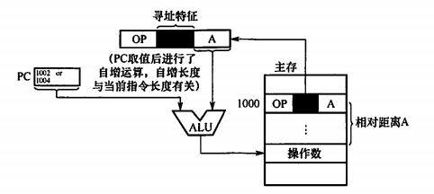
设指令长度为
则目的地址
基址寻址
EA=(B)+A
相对于基址(B)处 位移量为A的单元
基址寻址实现程序的重定位
基址寻址是指将CPU中基址寄存器(BR)的内容加上指令格式中的形式地址A而形成操作数的有效地址,即EA=(BR) + A。其中基址寄存器既可采用专用寄存器,又可采用通用寄存器
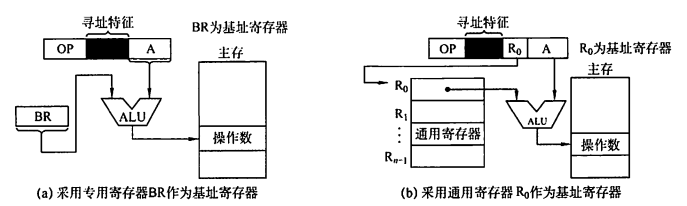
基址寄存器是面向操作系统的，其内容由操作系统或管理程序确定，主要用于解决程序逻辑空间与存储器物理空间的无关性。在程序执行过程中,基址寄存器的内容不变(作为基地址),形式地址可变(作为偏移量)。采用通用寄存器作为基址寄存器时,可由用户决定哪个寄存器作为基址寄存器，但其内容仍由操作系统确定。
基址寻址的优点是可扩大寻址范围(基址寄存器的位数大于形式地址A的位数);用户不必考虑自己的程序存于主存的哪个空间区域,因此有利于多道程序设计,并可用于编制浮动程序,但偏移量(形式地址A)的位数较短。
变址寻址
EA=(I)+A
相对于形式地址A处位移量为(I)的单元
变址寻址实现线性表元素的存取
变址寄存器的内容由用户设定，在程序执行过程中其值可变，而指令字中的形式地址A是不可变的！

变址寻址是指有效地址EA等于指令字中的形式地址A与变址寄存器IX 的内容之和,即EA= (IX) + A,其中IX为变址寄存器(专用),也可用通用寄存器作为变址寄存器。图为采用专用寄存器IX的变址寻址示意图。
堆栈寻址
堆栈是存储器（或专用寄存器组）中一块特定的、按后进先出（LIFO）原则管理的存储区,该存储区中读/写单元的地址是用一个特定的寄存器给出的,该寄存器称为堆栈指针(SP)。堆栈可分为硬堆栈与软堆栈两种。
寄存器堆栈又称硬堆栈。寄存器堆栈的成本较高,不适合做大容量的堆栈;而从主存中划出一段区域来做堆栈是最合算且最常用的方法,这种堆栈称为软堆栈。
在采用堆栈结构的计算机系统中，大部分指令表面上都表现为无操作数指令的形式，因为操作数地址都隐含使用了SP。通常情况下,在读/写堆栈中的一个单元的前后都伴有自动完成对SP 内容的增量或减量操作。
复合寻址
先间接
- 间接相对式 EA=(PC)+ (A)
- 间接变址式 EA=(X)+ (A)
后间接
- 相对间接式 EA =((PC)+ A)
- 变址间接式 EA =((X)+ A)
寻址方式的确定
在操作码中隐含寻址方式
如：MIPS指令中仅有一个主(虚)存地址，且指令中仅有一、二种寻址方式
专门的寻址方式位显式给出：如：X86指令
总结
- 立即数寻址 MOV AX , 500H
- 直接寻址 MOV AX, [500H]
- 寄存器寻址 MOV AX, BX
- 寄存器间接寻址 MOV AX, [BX]
- 基址寻址 MOV AX, 500H[BX]
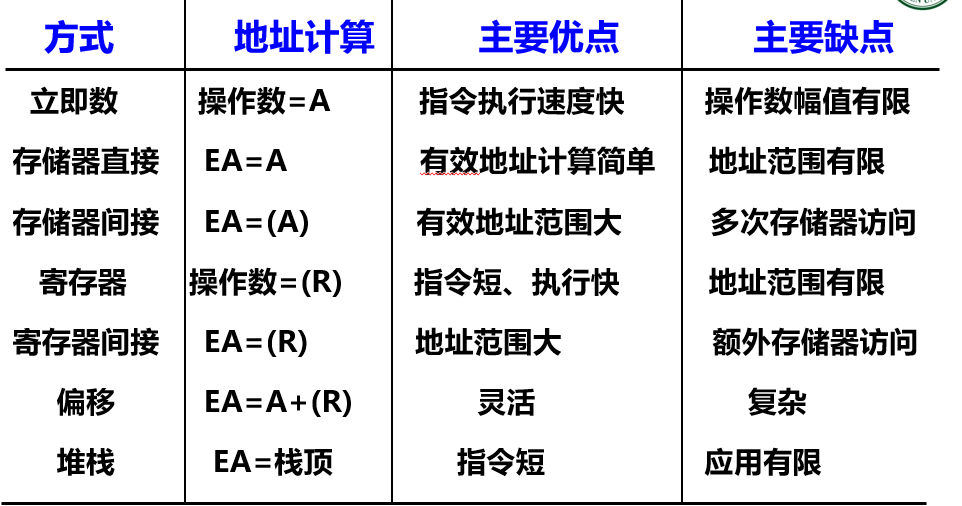
数据在计算机中的表示
为什么计算机内部所有信息都采用二进制编码表示？
- 制造二个稳定态的物理器件比较容易
- 二进制的编码、计数、运算规则简单
- 与逻辑命题对应，便于逻辑运算，并能方便地用逻辑电路实现算术运算
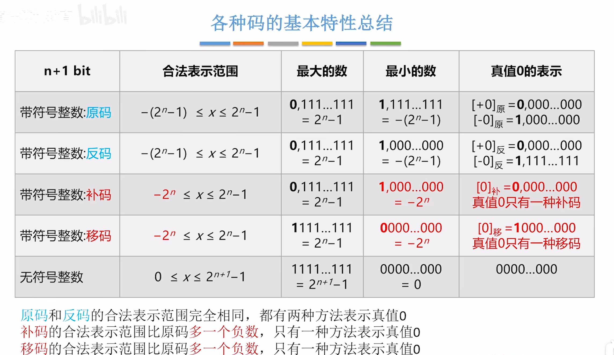
浮点表示
浮点数标准IEEE 754
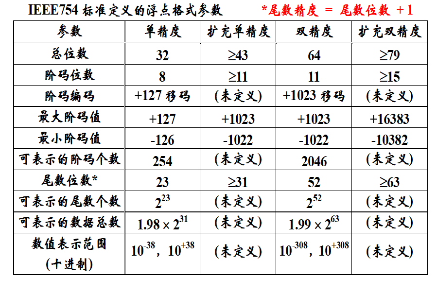
| 符号 s (Sign) | 阶码e (整数)Exponent | 尾数f (小数)Significand | |
|---|---|---|---|
| float | 1 | 8 | 23 |
| double | 1 | 11 | 52 |
SP(单精度)浮点数:
DP(双精度)浮点数:
阶码
阶码用移码表示，移码比补码更容易比较大小，便于浮点数加减运算时进行对阶操作
n为阶码位数，则偏置常数为
偏置常数为： 127（单精度SP)；1023（双精度DP） 单精度规格化数阶码范围为 0000 0001 (-126) ~ 11111110 (127)
全0和全1的编码留做它用
特殊浮点数
| 阶码(移码) | 尾数 | 数据类型 |
|---|---|---|
| 1~254 | 任何值 | 规格化数（隐含小数点前为“1”） |
| 0 | 0 | 0 |
| 0 | 非零的数 | 非规格化数（表示更小的数） Denormalized numbers |
| 255 | 0 | inf |
| 255 | 非零的数 | 非数(NaN)Not a Number,用于方便调试错误 |
表示0：
+0： 0 00000000 00000000000000000000000 -0： 1 00000000 00000000000000000000000
表示
非规格化数可表示
打破第一位为1的限制，牺牲精度换更大的表示范围
数据度量单位
| 度量单位 | 缩写 | 存储二进制时 换算关系 | 描述计算机通信带宽时 换算关系 |
|---|---|---|---|
| 千字节 | KB | 1KiB=210字节=1024B | 1KB=103字节=1000B |
| 兆字节 | MB | 1MiB=220字节=1024KB | 1MB=106字节=1000KB |
| 千兆字节 | GB | 1GiB=230字节=1024MB | 1GB=109字节=1000MB |
| 兆兆字节 | TB | 1TiB=240字节=1024GB | 1TB=1012字节=1000GB |
大端和小端存储
大端方式(Big Endian)：MSB(Most Significant Bit，最高有效位)所在的地址是数的地址（先存最高位） e.g. IBM 360/370, Motorola 68k, MIPS, Sparc, HP PA
xxxxxxxxxx2101 23 45 672内存->小端方式(Little Endian)：LSB(Least Significant Bit，最低有效位)所在的地址是数的地址（先存最低位） e.g. Intel 80x86, DEC VAX
xxxxxxxxxx2167 45 23 012内存->
有些机器两种方式都支持，需要通过特定控制位来设定（ARM, Alpha）
音频、视频和图像等文件格式或处理程序都涉及字节的顺序问题 例： Little endian：GIF, PC Paintbrush, Microsoft RTF等 Big endian：Adobe Photoshop, JPEG, MacPaint等
数据对齐
按边界对齐 (假定字的宽度为32位，存储器按字节编址)
- 字地址：4的倍数(低两位为0)
- 半字地址：2的倍数(低位为0)
- 字节地址：任意
不按边界对齐
数据校验
- 奇偶校验码
- 海明码
- 循环冗余码（现在应用广，特别是网络上）
定点小数
定点整数：小数点位于最右侧
编码表示：原码、反码、补码、移码
定点小数：小数点位于符号位右侧
编码表示：原码、反码、补码
定点小数转化为反码、补码和定点整数转化为反码、补码完全一样
加减也一样，转化为补码运算
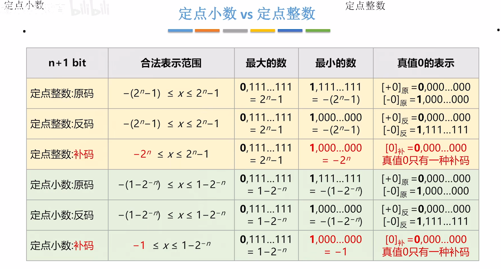
定点小数和定点整数在位数扩展时，扩展的位置不一样
定点小数在尾部扩展
1.110 -> 1.1100000
定点整数在头部扩展
1,110 -> 1,1111110 (补码)
1,110 -> 1,0001110 (原码)
MIPS指令集
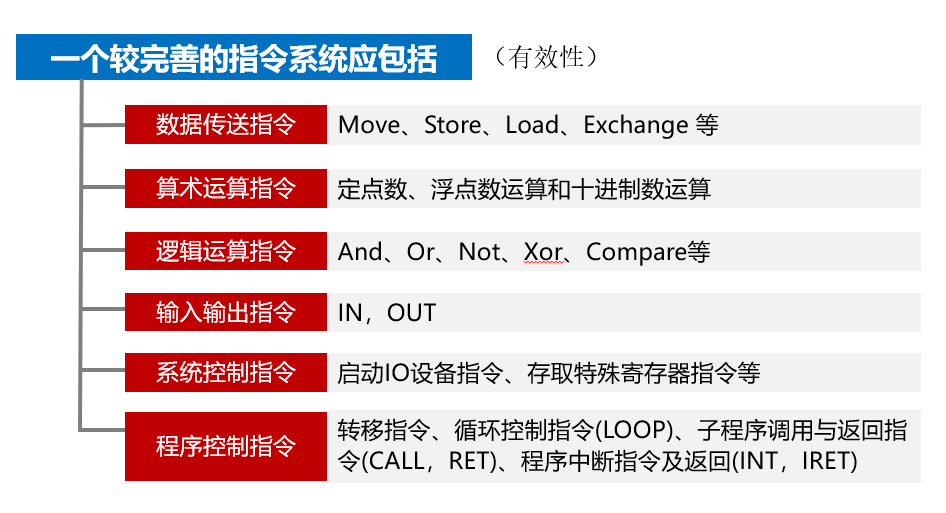
第三章 数据运算
按位运算
操作
- 按位或：“|”
- 按位与：“&”
- 按位取反：“~”
- 按位异或：“^”
用途
- 对一个位串实现“掩码”(mask)操作或相应的其他处理
- 主要用于对多媒体数据或控制信息进行处理
逻辑运算
操作
- “‖”表示“OR”运算
- “&&”表示“AND”运算
例如，
if ((x>y) && (i<100)) then …… - “!”表示“NOT”运算
用途
- 用于关系表达式的运算
例如，
if (x>y && i<100)then ……中的“and”运算
- 用于关系表达式的运算
例如，
与按位运算的差别
- 符号表示不同：
&vs.&&；|vs.‖； …… - 运算过程不同：按位 vs. 整体
- 结果类型不同：位串 vs. 逻辑值
- 符号表示不同：
移位运算
算术左移
算数右移
逻辑左移
逻辑右移
- 逻辑移位：对无符号数进行，左(右)边补0，低(高)位移出
- 算术移位：对带符号整数进行，移位前后符号位不变，编码不同，方式不同
- 循环移位：最左(右)边位移到最低(高)位，其他位左(右)移一位
位扩展和位截断运算
强制类型转换时，可能造成数据位被扩展或者被截断
短数转为长数—位扩展
- 无符号数：0扩展，即：前面补“0 ”
- 有符号整数：符号扩展，即：前面补“数符”
长数转为短数—位截断
- 强行将一个长数的高位丢弃
- 可能会发生数据“溢出”或者数据不正确
补码基本运算(加减)
补码加法器的基本实现
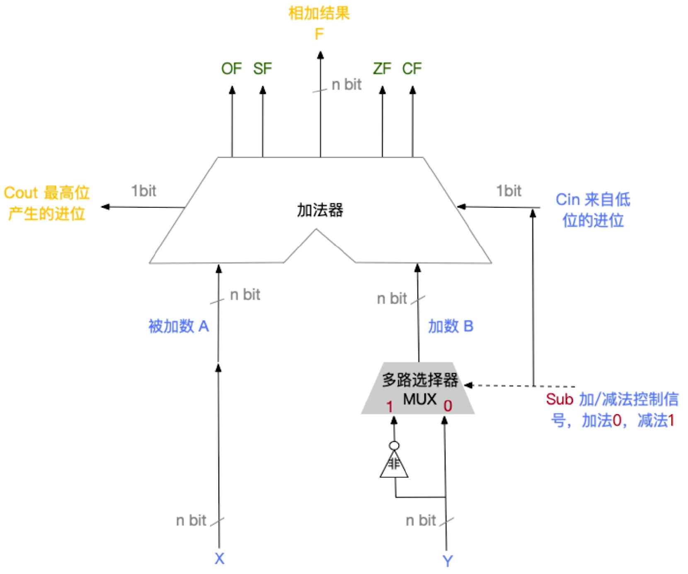
溢出问题
- OF (Overflow Flag)溢出标志。溢出时为1,否则置0.
- SF (Sign Flag)符号标志。结果为负时置1,否则置0.
- ZF (Zero Flag)零标志,运算结果为0时ZF位置1,否则置0.
- CF (Carry Flag)进位/借位标志,进位/借位时置1,否则置0.
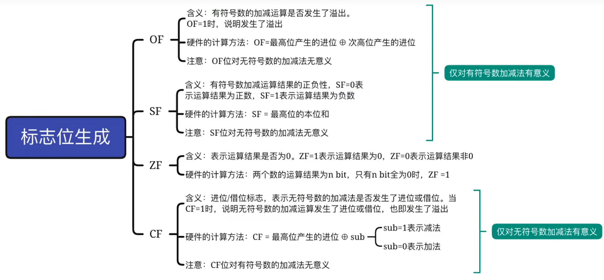
溢出检测方法：运算中增加一位补码（模4补码）
| 符号位 | 相同 | 01 | 10 |
|---|---|---|---|
| 状态表示 | 正常 | 正溢出 | 负溢出 |
加法器
串行进位加法器
分n步实现，每步只求一位和
缺点
- 进位按串行方式传递，速度慢
- 进位延时较长，关键路径延时
- 实现复杂度
并行进位加法器
- 同时产生进位
- 加法延时缩短，关键路径延时
- 实现相对复杂，复杂度
- 高位的进位形成逻辑涉及输入变量过多，将受到器件扇入系数的限制,实现困难
分组并行进位加法器
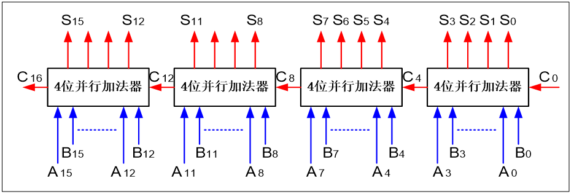
组内并行，组间传递
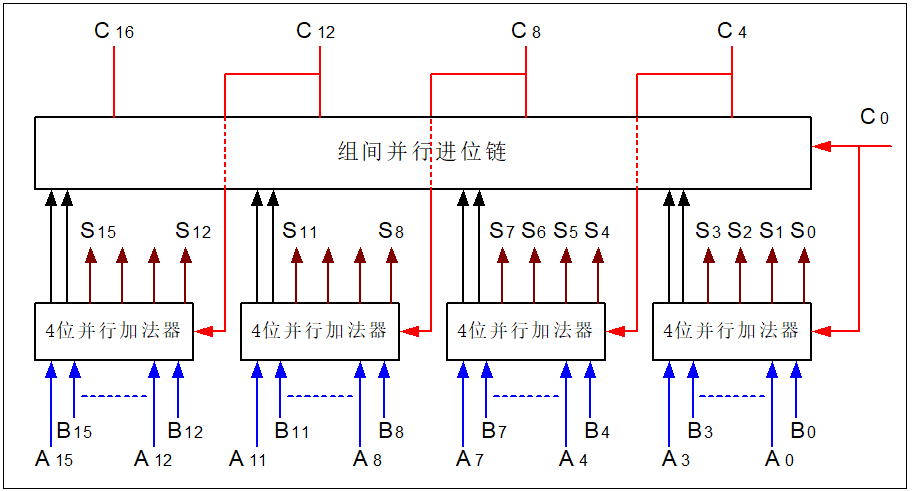
四个组同时计算，需要算两轮，首先各自独立算C4,C8,C12,C16，再根据得到的C4,C8,C12,C16重新算一遍，需要两个时钟周期
移码的加减运算
注意：此处的移码和IEEE754标准中的移码不同，使用不一样的偏置常数，所以运算法则不同，请注意区分
此处的移码运算：以8位移码为例，偏置常数
补码和移码的关系：符号位相反、数值位相同！
移码相加减的结果等于其对应补码
- 加法：直接将
- 减法：先将减数
- 溢出判断：进行模
原码乘法
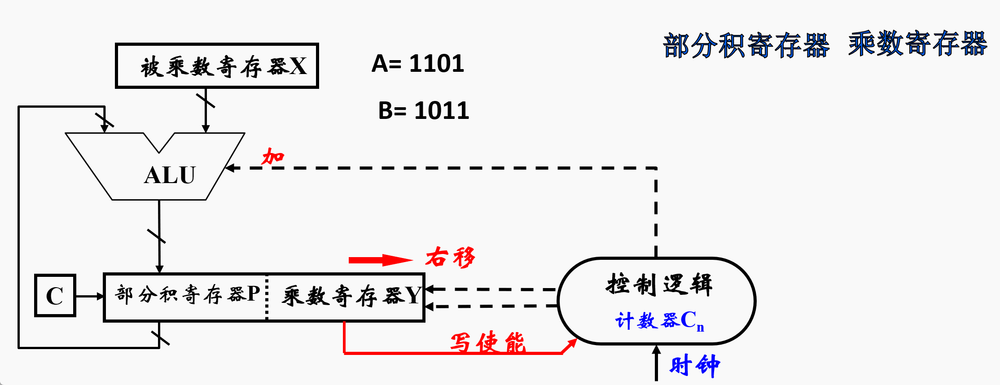
补码乘法(Booth乘法)
例：C=A＊B
被乘数
| 判断位 ( | 新部分积 | 操作 | 说明 |
|---|---|---|---|
| 0 0 | 右移一位 | ||
| 0 1 | 加 | ||
| 1 0 | 加 | ||
| 1 1 | 右移一位 |
快速加法
存储进位加法器CSA： 将进位在本级加法器中保存，留待以后级进行计算。又称伪加器
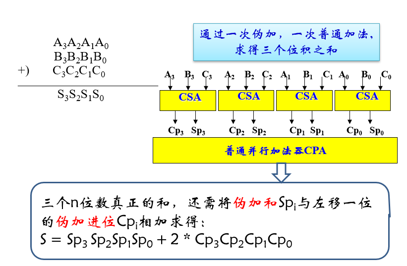
浮点数的计算
Representation(表示)
- Normalized form (规格化形式) 和 Denormalized form (非规格化形式)
- 单精度和 双精度格式
Range and Precision(表示范围和精度)
Arithmetic (运算：
Rounding(舍入)
Exceptions (异常处理)
Errors(误差)与精度控制
加法
进行尾数加法运算前，必须“对阶”！
IEEE754尾数右移时，需要注意的是什么？
1、要将隐含的“1”移到小数部分，空出位补0； 2、移出的低位保留到特定的“附加位”上
浮点数加法步骤
求阶差
对阶
尾数相加
规格化并判溢出
舍入
如果尾数比规定位数长，需考虑舍入
置0
尾数为0说明结果也为0， 根据IEEE754，阶码和尾数全为0
有四种舍入方式
就近舍入：
- 11：入
- 01：舍
- 10（强制结果为偶数)
- 00：保持结果不变
1.110111 ~ 1.1110
1.110101 ~ 1.1101
1.110110 ~ 1.1110
1.111100 ~ 1.1111
朝
朝
朝0方向舍入
溢出
阶码上溢
超过了阶码可能表示的最大允许值, 一般将其认为是
阶码下溢
超过了阶码可能表示的最小允许值 ， 一般将其认为是0
尾数上溢
两个同/异符号尾数相加/减， 最高有效位产生了进位
这种情况一般不是异常，可以更改阶码
尾数下溢
在将尾数右移时，尾数的最低有效位从 尾数域右端移出去，丢失了有效信息
乘除法
浮点移码
IEEE754标准中的移码计算法则和前面的移码运算法则不同，使用不一样的偏置常数，所以运算法则不同，请注意区分
加法：相当于移码相加的结果对符号位取反后再加一
减法：相当于移码相减的结果对符号位取反后再减一
规格化：
规格化原则 当尾数高位为0，左规 当尾数产生进位，右规
规格化尾数：
- 乘法：
- 除法：
(考试重点)
计组实验
RISC-V指令集
六种基本指令格式：
- 用于寄存器-寄存器操作的 R 类型指令
- 用于短立即数和访存 load 操作的 I 型指令
- 用于访存 store 操作的 S 型指令
- 用于条件跳转操 作的 B 类型指令
- 用于长立即数的 U 型指令
- 用于无条件跳转的 J 型指令。
- Arithmetics:
ADD,ADDI,SUB - Logical:
AND,ANDI,OR,ORI,XOR,XORI - Sets:
SLT,SLTI,SLTU,SLTIU - Shifts:
SRA,SRAI,SRL,SRLI,SLL,SLLI - Memory:
LW,SW,LB,SB - PC:
LUI,AUIPC - Jumps:
JAL,JALR - Branches:
BEQ,BNE,BLT,BGE,BLTU,BGEU
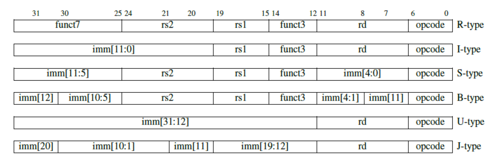
Arithmetics
xxxxxxxxxx41addi a0,a0,12addi a1,a1,23add a2,a0,a14sub a3,a1,a2带立即数：
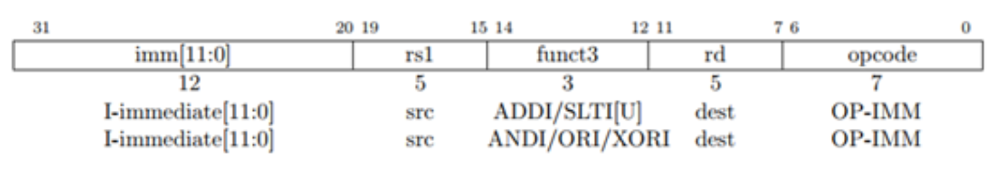
不带立即数：
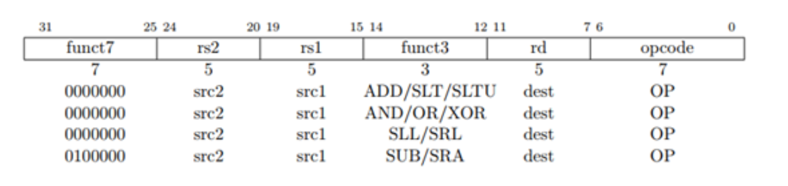
Logical
xxxxxxxxxx31addi a0,a0,12addi a1,a1,23or a3,a1,a0sets
xxxxxxxxxx41addi a0,a0,12addi a1,a1,23slt a2,a0,a14slti a3,a1,6SLTset on lower thanSLTI最后一个数为立即数SLTU和SLTIU用于无符号数
shifts
SRAshift right arithmeticSRAIshift right arithmetic immediateSRLshift right logicalSRLIshift right logical immediateSLLshift left logicalSLLIshift left logical immediate
Slli rd, rs1, imm表示shift left logical imm，将rs1中的数，逻辑左移imm这么多位数，逻辑移位的话都是填充0. Srli rd, rs1, imm表示shift right logical imm，表示逻辑右移，也是填充0 Srai rd, rs1, imm表示shift right arithmetic imm，表示算数右移，即右移的时候，填充符号位。
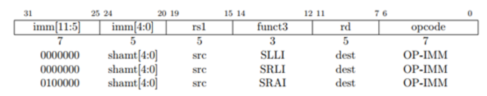
Memory
PC
LUILoad upper imm.Lui rd, imm表示load upper imm，用于构建32位立即数到rd中，低12位填充0，高20位是imm。注意，汇编的时候，imm的值只是立即数的高20位，低12位还要填充0.特别注意。
AUIPCAdd upper Imm to PCAuipc rd, imm，add upper imm to pc,表示将立即数低12位填充0，构建32位偏移，然后加到这条auipc指令的pc上，然后写到rd里。注意auipc加上一条有12位立即数的jalr指令，可以跳到32位地址下的任意位置。
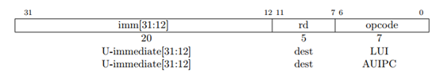
chisel
:=运算符
在chisel中，:=运算符用于给可变对象重新赋值，例如Wire或Reg。它是一种特殊的方法，可以在硬件描述中表示连接或驱动的语义。它与=运算符不同，=运算符用于给不可变对象初始化赋值，例如val变量或常量。:=运算符的优先级与=运算符相同，都是最低的。你可以参考以下两个网页了解更多关于chisel中=和:=的区别和用法：Chisel 入门引导教程和chisel中=和:=的区别。
+&
xxxxxxxxxx21// a +& b includes the carry, a + b does not2 io.sum := io.in0 +& io.in1代码见3.1节
32个32位寄存器组
xxxxxxxxxx21// A Register of a vector of UInts2 val reg = RegInit(VecInit(Seq.fill(32)(0.U(32.W))))见3.2节
xxxxxxxxxx261class RegisterFile(readPorts: Int) extends Module {2 require(readPorts >= 0)3 val io = IO(new Bundle {4 val wen = Input(Bool())5 val waddr = Input(UInt(5.W))6 val wdata = Input(UInt(32.W))7 val raddr = Input(Vec(readPorts, UInt(5.W)))8 val rdata = Output(Vec(readPorts, UInt(32.W)))9 })10 11 // A Register of a vector of UInts12 val reg = RegInit(VecInit(Seq.fill(32)(0.U(32.W))))13 14 when (io.wen) {15 reg(io.waddr) := io.wdata16 }17 for (i <- 0 until readPorts) {18 when (io.raddr(i) === 0.U) {19 io.rdata(i) := 0.U20 } .otherwise {21 io.rdata(i) := reg(io.raddr(i))22 }23 }24
25 26}中断
mepc：保存的是中断或者异常处理完成后，CPU返回并开始执行的地址。所以对于异常和中断，mepc的保存内容需要注意。mcause：保存的是导致中断或者异常的原因，具体内容请查阅特权级手册里的相关内容。mstatus：在响应中断时，需要将mstatus寄存器中的MPIE标志位设置为0，禁用中断。
然后从 mtvec 获取中断处理程序的地址，跳转到该地址执行进一步的中断处理。
CSR和CLINT
在RISC-V架构的CPU中，CSR（Control and Status Registers）和CLINT（Core Local Interruptor）是两个重要的组成部分。CSR是一类控制和状态寄存器，属于CPU自带的一类寄存器，用于控制和监视CPU的运行状态。CLINT是一个内存映射设备，用于处理器核之间的中断和定时器功能。下面是它们的工作原理：
CSR：在机器模式下，这些存储器主要包括以下六类：
- 处理器信息相关：例如处理器的厂商信息、架构信息、核心数等等，是一个芯片自身的固有信息。
- 中断配置相关：例如中断开关以及中断入口等信息。
- 中断响应相关：例如中断原因、中断返回地址等信息。
- 存储器保护相关：设置不同地址空间的存储器的访问属性，例如可读可写可执行等等。
- 性能统计相关和调试接口相关。
- 其他。
CSR的访问与当前指令或程序处于何种模式密切相关，不同模式下所能访问的CSR数量都不同。如果强行访问一个本不应该在该模式下访问的CSR则会触发非法指令异常。所以在设计CSR访问逻辑时，需要知道该CSR允许在哪些种模式下可以访问。
以下CSR寄存器的详细功能：
MSTATUS：机器状态寄存器，保存了全局中断使能状态和其他状态。它包含了一些位，用于控制和配置处理器的行为。例如，MIE 位用于全局中断使能，MPRV 位用于控制加载和存储访问的权限级别，MPP 位用于保存切换模式前的当前模式。
MIE：机器中断使能寄存器，对需要使能的中断，在对应位使能。它包含了一些位，每一位对应一个特定的中断源。当某一位被设置为 1 时，对应的中断源就被使能。
MTVEC：机器异常入口基地址寄存器。保存发生异常时需要跳转的地址。当发生异常时，处理器会跳转到这个地址开始执行异常处理程序。
MSCRATCH：机器模式下的临时寄存器，用于保存M模式指向hart上下文的指针,并在进入M模式的处理程序时，和用户寄存器交换。
MEPC：机器异常程序计数器。当发生异常时，处理器会将当前的程序计数器（PC）值保存到这个寄存器中。当异常处理完成后，处理器会从这个寄存器中读取 PC 值，并跳转到该地址继续执行。
MCAUSE：机器异常原因寄存器。当发生异常时，处理器会将异常的原因编码保存到这个寄存器中。这个编码可以用来判断是哪种类型的异常。
CycleL 和 CycleH：这两个寄存器用于记录处理器运行的周期数。由于 RISC-V 支持不同的位宽（例如 32 位和 64 位），因此 CycleL 和 CycleH 分别用于记录低位和高位的计数。但是我没有找到具体的文档来确认这一点。
CLINT：CLINT是一个内存映射设备，用于处理器核之间的中断和定时器功能。它包含了以下几个部分：
- MSIP（Machine-Mode Software Interrupt Pending）寄存器：用于处理机器模式下软件中断请求。
- MTIMECMP（Machine-Mode Timer Compare）寄存器：用于设置机器模式下定时器中断触发时间。
- MTIME（Machine-Mode Timer）寄存器：用于记录机器模式下经过的时间。
当MSIP寄存器被写入时，会向处理器核发送一个软件中断请求。当MTIME计数达到MTIMECMP设置的值时，会向处理器核发送一个定时器中断请求。
CSR指令
翻译自非特权级手册第九章
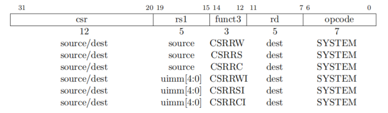
符号说明：以下用[csr]表示在CSR寄存器组中编号为csr的寄存器中存储的值
(rd)表示在通用寄存器组中编号为rd的寄存器中存储的值
CSRRW (Atomic Read/Write CSR) ：用于交换CSR寄存器的值和通用寄存器的值
如果
rd不是0号寄存器，则先将[csr]零扩展到XLEN位，并把它写到rd中，即(rd)=(零扩展)[csr]；然后[csr]=(rs1)如果
rd是0号寄存器，则只执行[csr]=(rs1)CSRRS (Atomic Read and Set Bits in CSR)：读取CSR寄存器的值
先将
[csr]零扩展到XLEN位，并把它写到rd中，即(rd)=(零扩展)[csr]如果rs1不是0号寄存器，执行按位或运算
[csr]=[csr]|(rs1)CSRRC (Atomic Read and Clear Bits in CSR)：
先将
[csr]零扩展到XLEN位，并把它写到rd中，即(rd)=(零扩展)[csr]如果rs1不是0号寄存器，执行按位与运算
[csr]=[csr]&~(rs1)CSRRWI (Atomic Read/Write CSR Immediate)
如果
rd不是0号寄存器，则先将[csr]零扩展到XLEN位，并把它写到rd中，即(rd)=(零扩展)[csr]；然后[csr]=(零扩展)rs1如果
rd是0号寄存器，则只执行[csr]=rs1CSRRSI (Atomic Read and Set Bits in CSR Immediate)：读取CSR寄存器的值
先将
[csr]零扩展到XLEN位，并把它写到rd中，即(rd)=(零扩展)[csr]如果rs1不是0，执行按位或运算
[csr]=[csr]|(零扩展)rs1CSRRCI (Atomic Read and Clear Bits in CSR Immediate)：
先将
[csr]零扩展到XLEN位，并把它写到rd中，即(rd)=(零扩展)[csr]如果rs1不是0，执行按位与运算
[csr]=[csr]&~(零扩展)rs1
csr[11:10]为11的是只读寄存器，为10,01,00的是读写寄存器
vivado新手入门
器件选择xc7a35tcpg236-1
- 左上角绿色箭头运行run synthesis
- Open synthesized design设计芯片引脚
打开I/O ports
时钟信号接W5(CLK100MHz)
I/O std改为LVCMOS33
- 左上角绿色箭头运行run implementation
- 选择generate bitstream
- hardware manager ,选择program device
bit文件路径D:/vivado/vivado_ducuments/AndLogic/AndLogic.runs/impl_1/AndLogic.bit
(D:/vivado/vivado_ducuments/AndLogic为项目目录)
bit文件写的程序在开发板的RAM中
把程序写在ROM中：
settings/bitstream/-bin_file打勾
重新generate bitstream,现在在生成bit文件的同时还会生成bin文件
hardware manager ,选择add configuration memory device,搜索S25FL032
如果单击流程导航窗口“编程和调试（Program and Debug）”项下的“增加配置内存设备（Add configuration Memory Device）”项进行比特流设置。该项在“Program Device”项之前是灰色的，不可单击，可能因为已经选择了一个flash芯片，可以先把内核下面的芯片移除，重新选择flash型号 如下图，鼠标右键[n25q64-3.3v-spi-x1_x2_x4],选择[Remove Configuration Memory Device]
bin文件目录:D:/vivado/vivado_ducuments/AndLogic/AndLogic.runs/impl_1/AndLogic.bin
(D:/vivado/vivado_ducuments/AndLogic为项目目录)
1.第一个程序
与门逻辑
xxxxxxxxxx341`timescale 1ns 1ps2//////////////////////////////////////////////////////////////////////////////////3// Company: 4// Engineer: 5// 6// Create Date: 2023/09/28 07:51:147// Design Name: 8// Module Name: AndLogic9// Project Name: 10// Target Devices: 11// Tool Versions: 12// Description: 13// 14// Dependencies: 15// 16// Revision:17// Revision 0.01 - File Created18// Additional Comments:19// 20//////////////////////////////////////////////////////////////////////////////////21
22
23module AndLogic(24 input CLK,25 input Data1,26 input Data2,27 output reg Result28 );29 30 always@(posedge CLK)begin31 Result < Data1 Data2;32 end33endmodule34
译码器
xxxxxxxxxx491`timescale 1ns 1ps2//////////////////////////////////////////////////////////////////////////////////3// Company: 4// Engineer: 5// 6// Create Date: 2023/09/28 07:51:147// Design Name: 8// Module Name: AndLogic9// Project Name: 10// Target Devices: 11// Tool Versions: 12// Description: 13// 14// Dependencies: 15// 16// Revision:17// Revision 0.01 - File Created18// Additional Comments:19// 20//////////////////////////////////////////////////////////////////////////////////21
22//译码器23module AndLogic(24 input CLK,25 input d1,26 input d2,27 input d3,28 output reg r0,29 output reg r1,30 output reg r2,31 output reg r3,32 output reg r4,33 output reg r5,34 output reg r6,35 output reg r736 );37 38 always@(posedge CLK)begin39 r0d3 d2 d1;40 r1d3 d2 d1;41 r2d3 d2 d1;42 r3d3 d2 d1;43 r4d3 d2 d1;44 r5d3 d2 d1;45 r6d3 d2 d1;46 r7d3 d2 d1;47 end48endmodule49
xxxxxxxxxx321set_property PACKAGE_PIN W5 [get_ports CLK]2set_property PACKAGE_PIN R2 [get_ports Data1]3set_property PACKAGE_PIN T1 [get_ports Data2]4set_property PACKAGE_PIN L1 [get_ports Result]5set_property IOSTANDARD LVCMOS33 [get_ports Data1]6set_property IOSTANDARD LVCMOS33 [get_ports Data2]7set_property IOSTANDARD LVCMOS33 [get_ports CLK]8set_property IOSTANDARD LVCMOS33 [get_ports Result]9
10
11set_property PACKAGE_PIN U1 [get_ports d1]12set_property PACKAGE_PIN T1 [get_ports d2]13set_property PACKAGE_PIN R2 [get_ports d3]14set_property PACKAGE_PIN U16 [get_ports r0]15set_property PACKAGE_PIN E19 [get_ports r1]16set_property PACKAGE_PIN U19 [get_ports r2]17set_property PACKAGE_PIN V19 [get_ports r3]18set_property PACKAGE_PIN W18 [get_ports r4]19set_property PACKAGE_PIN U15 [get_ports r5]20set_property PACKAGE_PIN U14 [get_ports r6]21set_property PACKAGE_PIN V14 [get_ports r7]22set_property IOSTANDARD LVCMOS33 [get_ports d1]23set_property IOSTANDARD LVCMOS33 [get_ports d2]24set_property IOSTANDARD LVCMOS33 [get_ports d3]25set_property IOSTANDARD LVCMOS33 [get_ports r0]26set_property IOSTANDARD LVCMOS33 [get_ports r1]27set_property IOSTANDARD LVCMOS33 [get_ports r2]28set_property IOSTANDARD LVCMOS33 [get_ports r3]29set_property IOSTANDARD LVCMOS33 [get_ports r4]30set_property IOSTANDARD LVCMOS33 [get_ports r5]31set_property IOSTANDARD LVCMOS33 [get_ports r7]32set_property IOSTANDARD LVCMOS33 [get_ports r6]2.七段显示学号
首先创建文件xuehao.v
七段数码管：
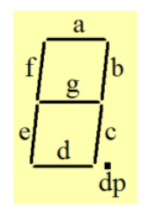
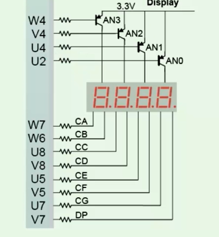
Top.v
xxxxxxxxxx261`timescale 1ns 1ps2module Top(3 input CLK,4 input [1:0] Switch,5 output LED,6 output [3:0] seg,7 output [6:0] a_to_g8 );9 AndLogic andlogic1(10 .CLK(CLK),11 .d1(Switch[0]),12 .d2(Switch[1]),13 .d3(LED)14 ); 15 wire clk_wire;16 CLK_div CLK_div1(17 .CLK_in(CLK),18 .CLK_out(clk_wire)19 );20 xuehao xuehao1(21 .CLK(clk_wire),22 .seg(seg),23 .AToG(a_to_g)24 25 );26endmoduleAndLogic.v
xxxxxxxxxx131`timescale 1ns 1ps2//与门3module AndLogic(4 input CLK,5 input d1,6 input d2,7 output reg d3 8 );9 10 always@(posedge CLK)begin11 d3 < d1 d2;12 end13endmoduleCLK_div.v
xxxxxxxxxx221`timescale 1ns 1ps2module CLK_div #(parameter N99999)(3 input CLK_in,4 output CLK_out5 );6 reg [31:0]counter0;7 reg out0;8 always@(posedge CLK_in)begin9 if(counterN1)begin10 counter<0;11 end12 else begin13 countercounter1;14 end15 end16 always@(posedge CLK_in)begin17 if(counterN1)begin18 out < out;19 end20 end21 assign CLK_outout;22endmodulexuehao.v
xxxxxxxxxx461`timescale 1ns 1ps2module xuehao(3 input CLK,4 output reg[3:0]seg,5 output reg[6:0]AToG6 );7 reg [3:0]x;8 reg [1:0]tmp;9 //学号 842110 //位选11 always@(posedge CLK)begin12 case(tmp)13 0: begin x8; seg4'b0111;end14 1: begin x4; seg4'b1011;end15 2: begin x2; seg4'b1101;end16 3: begin x1; seg4'b1110;end17 endcase18 if(tmp3)19 tmp0;20 else21 tmptmp1;22 23 end24 //段选25 always@() begin //星号表示只要下面涉及到的变量发生改变就会执行26 case(x)27 0: AToG 7'b0000001;28 1: AToG 7'b1001111;29 2: AToG 7'b0010010;30 3: AToG 7'b0000110;31 4: AToG 7'b1001100;32 5: AToG 7'b0100100;33 6: AToG 7'b0100000;34 7: AToG 7'b0001111;35 8: AToG 7'b0000000;36 9: AToG 7'b0000100;37 'hA: AToG 7'b0001000;38 'hB: AToG 7'b1100000;39 'hC: AToG 7'b0110001;40 'hD: AToG 7'b1000010;41 'hE: AToG 7'b0110000;42 'hF: AToG 7'b0111000;43 default: AToG 7'b0000001; // 044 endcase45 end46endmodule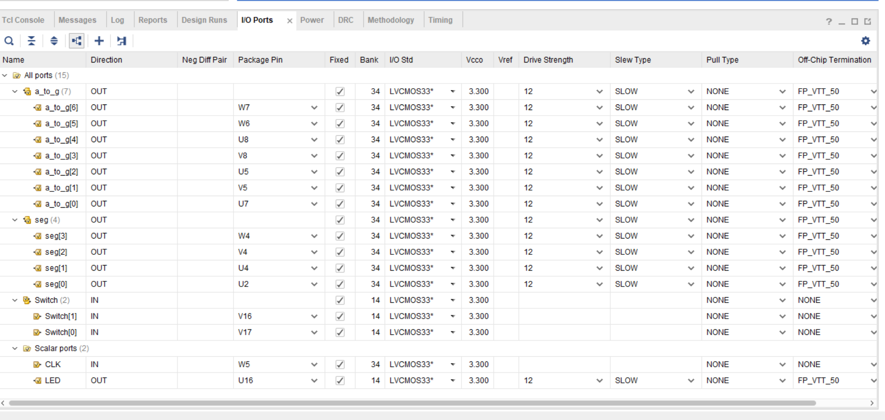
3.实现ALU
输入：两个四位数据输入 运算符
输出：运算结果，符号标志位，0标志位
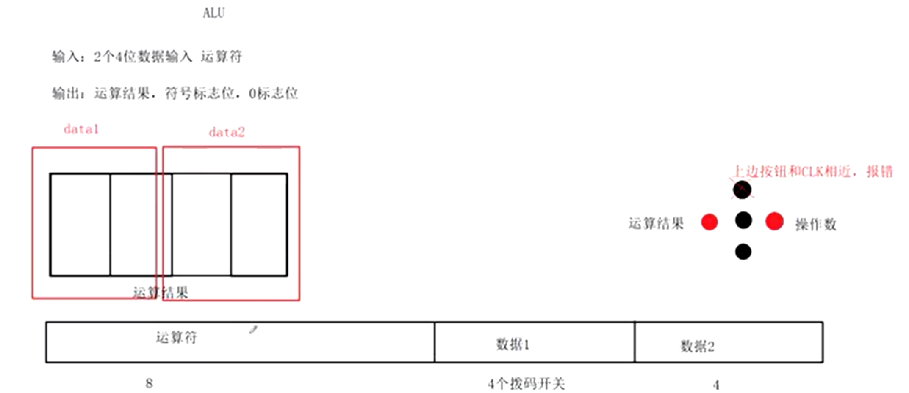
所需模块
Top
- ALU
- 7段数码管显示模块
- 时钟分频模块
4位无符号加法器
top.v
xxxxxxxxxx401`timescale 1ns 1ps2module top(3 input CLK,4 input [7:0] in,5 input left,6 input right,7 output [3:0] seg,8 output [6:0] AToG,9 output CF10 );11 reg status0;12 wire clk_out;13 wire [15:0]data;14 always@()begin15 if (left1right0)16 status1;17 else if(left0right1)18 status0;19 else20 statusstatus;21 end22 my_alu my_alu1(23 .CLK(CLK),24 .status(status),25 .inp(in),26 .data(data),27 .CF(CF)28 );29 CLK_div clk_div1(30 .CLK_in(CLK),31 .CLK_out(clk_out)32 );33 Xianshi xianshi1(34 .CLK(clk_out),35 .Data(data),36 .seg(seg),37 .AToG(AToG)38 );39 40endmoduleCLK_div.v
xxxxxxxxxx221`timescale 1ns 1ps2module CLK_div #(parameter N99999)(3 input CLK_in,4 output CLK_out5 );6 reg [31:0]counter0;7 reg out0;8 always@(posedge CLK_in)begin9 if(counterN1)begin10 counter<0;11 end12 else begin13 countercounter1;14 end15 end16 always@(posedge CLK_in)begin17 if(counterN1)begin18 out < out;19 end20 end21 assign CLK_outout;22endmodulemy_alu.v
xxxxxxxxxx361`timescale 1ns 1ps2module my_alu(3 input CLK,4 input status,5 input [7:0]inp,6 output reg [15:0]data,7 output reg CF8 );9 reg[3:0] inh;10 11 reg[3:0] inl;12 13 reg [4:0] ans;14 always@(posedge CLK)begin15 inh[3:0]inp[7:4];16 inl[3:0]inp[3:0];17 if(status0)begin18 data[15:12]inh10;19 data[11:8]inh10;20 data[7:4]inl10;21 data[3:0]inl10;22 end23 else begin24 ansinhinl;25 if(ans[4]1)26 CF1;27 else28 CF0;29 data[15:12]0;30 data[11:8]0;31 data[7:4]ans10;32 data[3:0]ans10;33 34 end35 end36endmoduleXianshi.v
xxxxxxxxxx481`timescale 1ns 1ps2module Xianshi(3 input CLK,4 input [15:0] Data,5 output reg [3:0] seg,6 output reg [6:0] AToG7 );8 reg [2:0]tmp;9 reg [3:0]x;10 //位选11 always@(posedge CLK)begin12 case(tmp)13 0: begin xData[15:12]; seg4'b0111;end14 1: begin xData[11:8]; seg4'b1011;end15 2: begin xData[7:4]; seg4'b1101;end16 3: begin xData[3:0]; seg4'b1110;end17 endcase18 if(tmp3)19 tmp0;20 else21 tmptmp1;22 23 end24 25 //段选26 always@() begin //星号表示只要下面涉及到的变量发生改变就会执行27 case(x)28 0: AToG 7'b0000001;29 1: AToG 7'b1001111;30 2: AToG 7'b0010010;31 3: AToG 7'b0000110;32 4: AToG 7'b1001100;33 5: AToG 7'b0100100;34 6: AToG 7'b0100000;35 7: AToG 7'b0001111;36 8: AToG 7'b0000000;37 9: AToG 7'b0000100;38 'hA: AToG 7'b0001000;39 'hB: AToG 7'b1100000;40 'hC: AToG 7'b0110001;41 'hD: AToG 7'b1000010;42 'hE: AToG 7'b0110000;43 'hF: AToG 7'b0111000;44 default: AToG 7'b0000001; // 045 endcase46 end47 48endmoduleconstraint.xdc
xxxxxxxxxx641set_property IOSTANDARD LVCMOS33 [get_ports {AToG[6]}]2set_property IOSTANDARD LVCMOS33 [get_ports {AToG[5]}]3set_property IOSTANDARD LVCMOS33 [get_ports {AToG[4]}]4set_property IOSTANDARD LVCMOS33 [get_ports {AToG[3]}]5set_property IOSTANDARD LVCMOS33 [get_ports {AToG[2]}]6set_property IOSTANDARD LVCMOS33 [get_ports {AToG[1]}]7set_property IOSTANDARD LVCMOS33 [get_ports {AToG[0]}]8set_property IOSTANDARD LVCMOS33 [get_ports {in[15]}]9set_property IOSTANDARD LVCMOS33 [get_ports {in[14]}]10set_property IOSTANDARD LVCMOS33 [get_ports {in[13]}]11set_property IOSTANDARD LVCMOS33 [get_ports {in[12]}]12set_property IOSTANDARD LVCMOS33 [get_ports {in[11]}]13set_property IOSTANDARD LVCMOS33 [get_ports {in[10]}]14set_property IOSTANDARD LVCMOS33 [get_ports {in[9]}]15set_property IOSTANDARD LVCMOS33 [get_ports {in[8]}]16set_property IOSTANDARD LVCMOS33 [get_ports {in[7]}]17set_property IOSTANDARD LVCMOS33 [get_ports {in[6]}]18set_property IOSTANDARD LVCMOS33 [get_ports {in[5]}]19set_property IOSTANDARD LVCMOS33 [get_ports {in[4]}]20set_property IOSTANDARD LVCMOS33 [get_ports {in[3]}]21set_property IOSTANDARD LVCMOS33 [get_ports {in[2]}]22set_property IOSTANDARD LVCMOS33 [get_ports {in[1]}]23set_property IOSTANDARD LVCMOS33 [get_ports {in[0]}]24set_property IOSTANDARD LVCMOS33 [get_ports {seg[3]}]25set_property IOSTANDARD LVCMOS33 [get_ports {seg[2]}]26set_property IOSTANDARD LVCMOS33 [get_ports {seg[1]}]27set_property IOSTANDARD LVCMOS33 [get_ports {seg[0]}]28set_property IOSTANDARD LVCMOS33 [get_ports CLK]29set_property PACKAGE_PIN W7 [get_ports {AToG[6]}]30set_property PACKAGE_PIN W6 [get_ports {AToG[5]}]31set_property PACKAGE_PIN U8 [get_ports {AToG[4]}]32set_property PACKAGE_PIN V8 [get_ports {AToG[3]}]33set_property PACKAGE_PIN U5 [get_ports {AToG[2]}]34set_property PACKAGE_PIN V5 [get_ports {AToG[1]}]35set_property PACKAGE_PIN U7 [get_ports {AToG[0]}]36set_property PACKAGE_PIN R2 [get_ports {in[15]}]37set_property PACKAGE_PIN T1 [get_ports {in[14]}]38set_property PACKAGE_PIN U1 [get_ports {in[13]}]39set_property PACKAGE_PIN W2 [get_ports {in[12]}]40set_property PACKAGE_PIN R3 [get_ports {in[11]}]41set_property PACKAGE_PIN T2 [get_ports {in[10]}]42set_property PACKAGE_PIN T3 [get_ports {in[9]}]43set_property PACKAGE_PIN V2 [get_ports {in[8]}]44set_property PACKAGE_PIN W13 [get_ports {in[7]}]45set_property PACKAGE_PIN W14 [get_ports {in[6]}]46set_property PACKAGE_PIN V15 [get_ports {in[5]}]47set_property PACKAGE_PIN W15 [get_ports {in[4]}]48set_property PACKAGE_PIN W17 [get_ports {in[3]}]49set_property PACKAGE_PIN W16 [get_ports {in[2]}]50set_property PACKAGE_PIN V16 [get_ports {in[1]}]51set_property PACKAGE_PIN V17 [get_ports {in[0]}]52set_property PACKAGE_PIN W4 [get_ports {seg[3]}]53set_property PACKAGE_PIN V4 [get_ports {seg[2]}]54set_property PACKAGE_PIN U4 [get_ports {seg[1]}]55set_property PACKAGE_PIN U2 [get_ports {seg[0]}]56set_property PACKAGE_PIN W5 [get_ports CLK]57
58set_property PACKAGE_PIN U16 [get_ports CF]59set_property PACKAGE_PIN W19 [get_ports left]60set_property PACKAGE_PIN T17 [get_ports right]61set_property IOSTANDARD LVCMOS33 [get_ports CF]62set_property IOSTANDARD LVCMOS33 [get_ports left]63set_property IOSTANDARD LVCMOS33 [get_ports right]64
四位多功能ALU
- 0000加法
- 0001减法
- 0010乘法
- 0011除法
- 0100取余
- 0101按位与
- 0110 按位或
- 0111按位异或
第五章 中央处理器
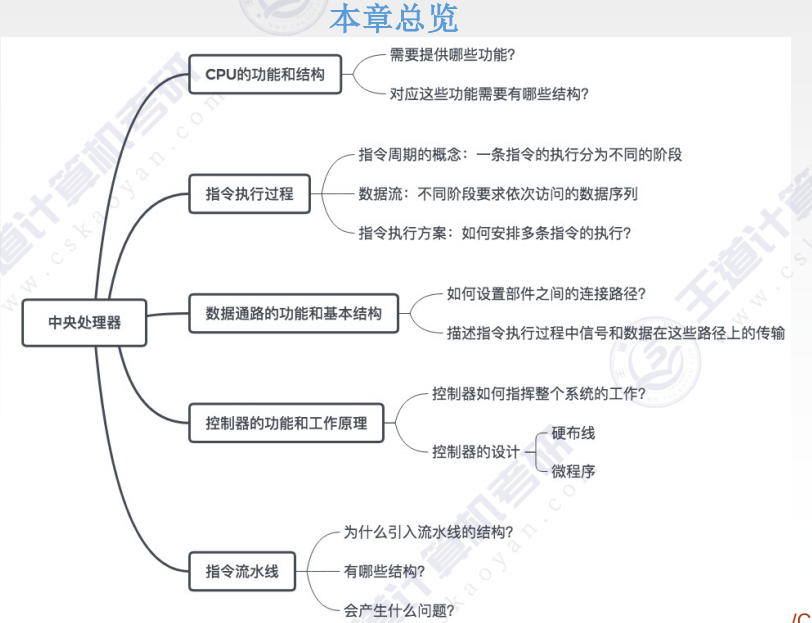
CPU的功能和基本结构
1.指令控制。完成取指令、分析指令和执行指令的操作，即程序的顺序控制。
2.操作控制。一条指令的功能往往是由若干操作信号的组合来实现的。CPU管理并产生由内存取出的每条指令的操作信号，把各种操作信号送往相应的部件，从而控制这些部件按指令的要求进行动作。
3.时间控制。对各种操作加以时间上的控制。时间控制要为每条指令按时间顺序提供应有的控制信号。
4.数据加工。对数据进行算术和逻辑运算。
5.中断处理。对计算机运行过程中出现的异常情况和特殊请求进行处理。
运算器---->对数据进行加工
控制器---->协调并控制计算机各部件执行程序的指令序列，基本功能包括取指令、分析指令、执行指令CPU
取指令: 自动形成指令地址; 自动发出取指令的命令。
分析指令：操作码译码(分析本条指令要完成什么操作)；产生操作数的有效地址。
执行指令：根据分析指令得到的“操作命令”和“操作数地址”，形成操作信号控制序列,控制运算器、存储器以及I/O设备完成相应的操作。
中断处理:管理总线及输入输出;处理异常情况(如掉电)和特殊请求(如打印机请求打印一行字符)。
专用数据通路方式：根据指令执行过程中的数据和地址的流动方向安排连接线路。每个寄存器和ALU之间有专用线路连接
如果直接用导线连接，相当于多个寄存器同时并且一直向ALU传输数据,使用多路选择器MUX根据控制信号选择一路输出
使用三态门可以控制每一路是否输出
性能较高，基本不存在数据冲突现象，但结构复杂，硬件量大，不易实现。专用数据通路方式：根据指令执行过程中的数据和地址的流动方向安排连接线路。
ALU算术逻辑单元内部基本结构
1.算术逻辑单元:主要功能是进行算术/逻辑运算。
2.通用寄存器组：如AX、BX、CX、DX、SP等，用于存放操作数（包括源操作数、目的操作数及中间结果）和各种地址信息等。SP是堆栈指针，用于指示栈顶的地址。
3.暂存寄存器:用于暂存从主存读来的数据,这个数据不能存放在通用寄存器中,否则会破坏其原有内容。
4.累加寄存器:它是一个通用寄存器,用于暂时存放ALU运算的结果信息,用于实现加法运算。
5.程序状态字寄存器：保留由算术逻辑运算指令或测试指令的结果而建立的各种状态信息,如溢出标志(OP)、符号标志（SF)、零标志（ZF)、进位标志(CF)等。PSW中的这些位参与并决定微操作的形成。
6,移位器:对运算结果进行移位运算。
7,计数器:控制乘除运算的操作步数。
CU控制器基本结构
1.程序计数器：用于指出下一条指令在主存中的存放地址。CPU就是根据PC的内容去主存中取指令的。因程序中指令(通常)是顺序执行的,所以PC有自增功能。
2,指令寄存器:用于保存当前正在执行的那条指令。
3,指令译码器:仅对操作码字段进行译码,向控制器提供特定的操作信号。
4,微操作信号发生器:根据IR的内容(指令)、PSW的内容(状态信息)及时序信号,产生控制整个计算机系统所需的各种控制信号,其结构有组合逻辑型和存储逻辑型两种。
5·时序系统:用于产生各种时序信号,它们都是由统一时钟（CLOCK）分频得到。
6,存储器地址寄存器:用于存放所要访问的主存单元的地址。
7,存储器数据寄存器:用于存放向主存写入的信息或从主存中读出的信息。
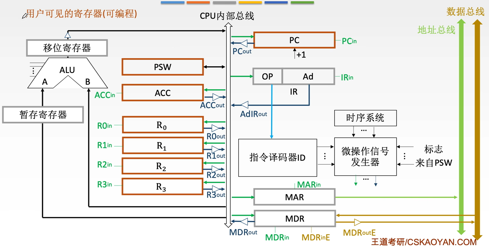
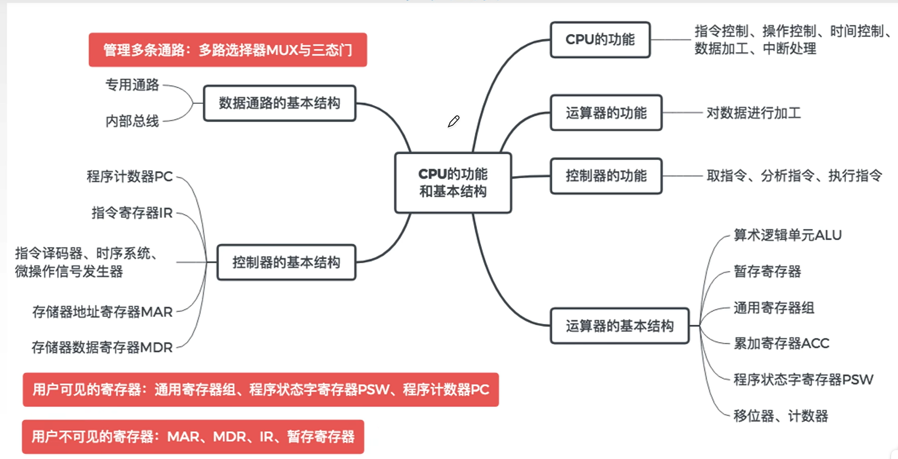
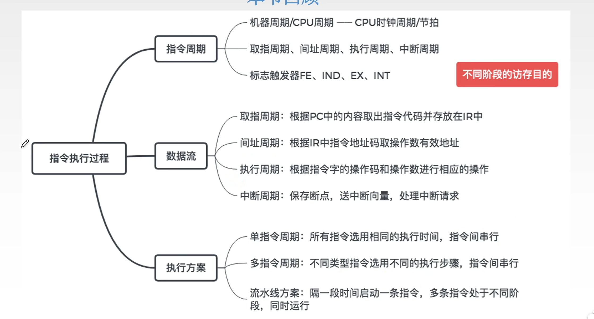
数据通路
单总线结构
三总线结构
（像MIPS32）
专用通路结构
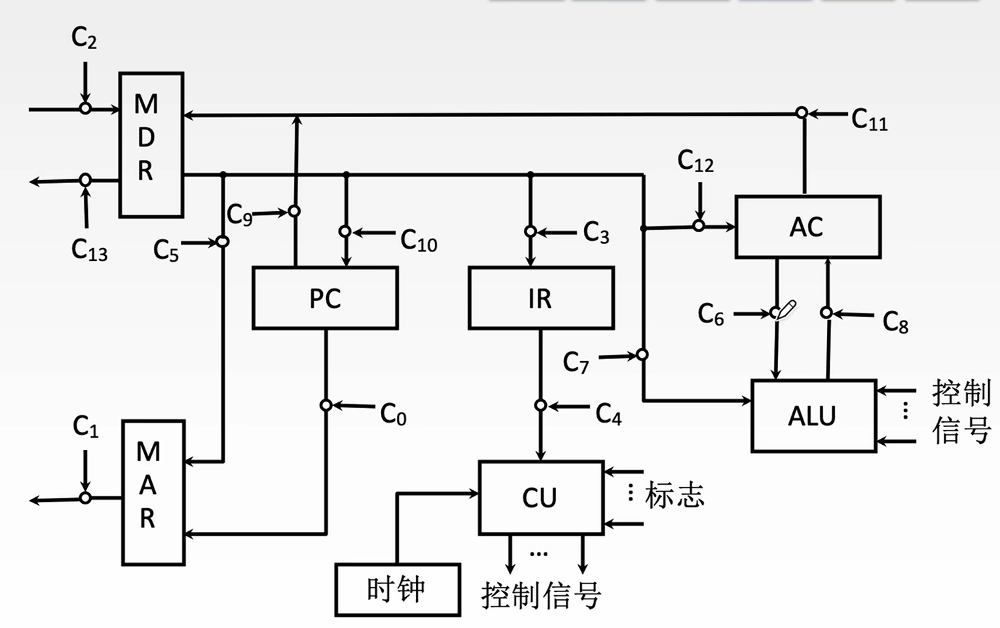
- 取指周期 FE=1 (instruction fetch cycle)
- 间指周期 IND=1 (Indirect cycle)
- 执行周期 EX=1 (Execute Cycle)
- 中断周期 INT=1 (Interrupt Cycle)
MIPS的数据通路
CPU执行过程
- 取指令
- PC+Δ→PC
- 指令移码
- 进行主存地址运算
- 取操作数
- 执行算数/逻辑运算
- 存结果
- 判断和检测异常事件
- 中断请求
公共部件：取址部件
- Load
- r-指令
硬布线控制器的设置
根据指令操作码、目前的机器周期、节拍信号、机器状态条件,即可确定现在这个节拍下应该发出哪些“微命令”
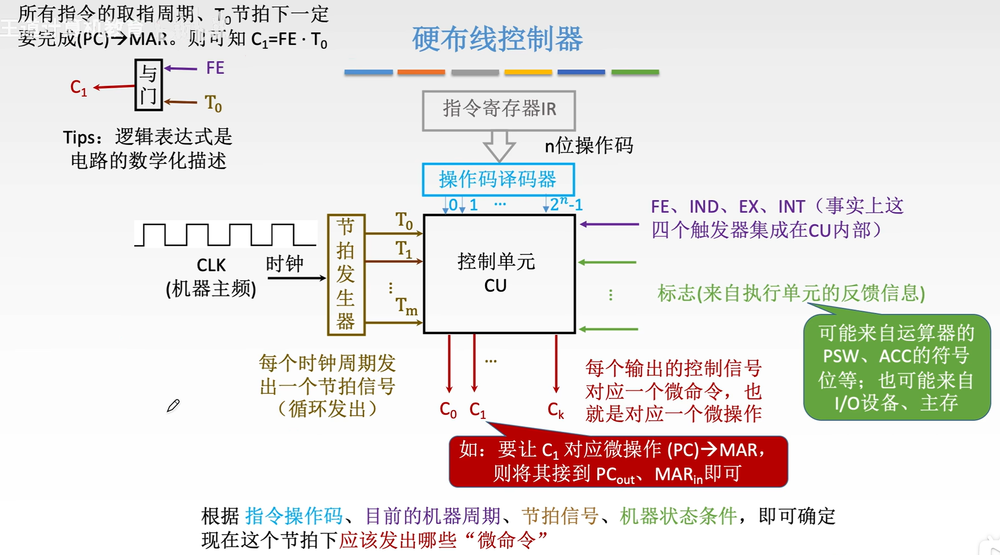
微程序控制器
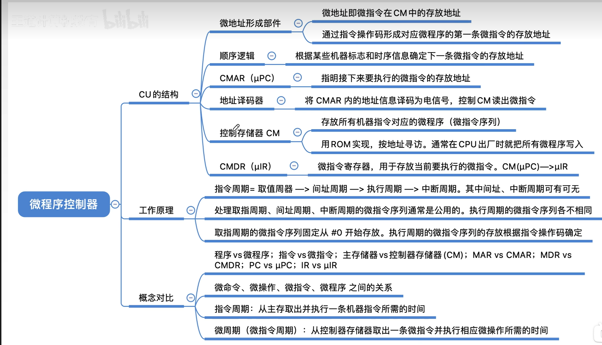
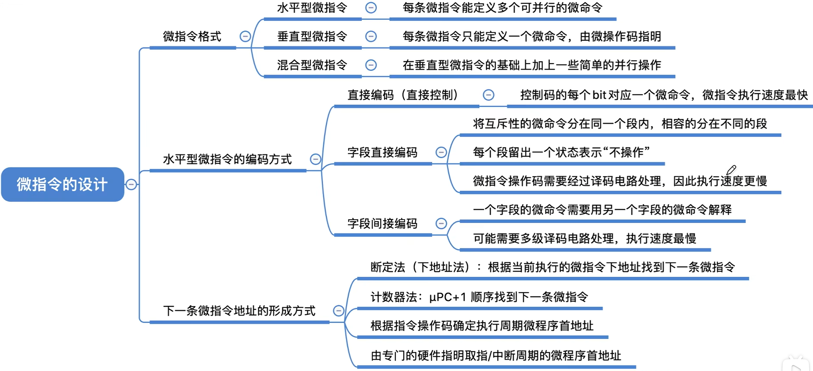
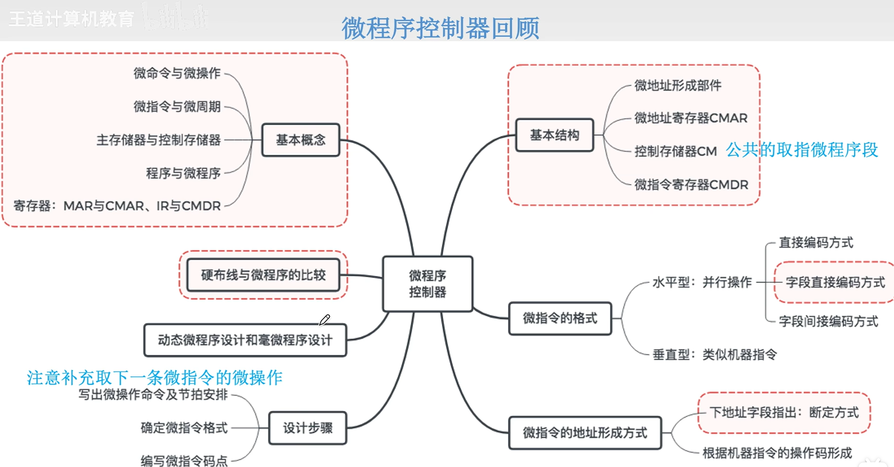
指令流水线
机器周期的一种经典设置
这是经典MIPS架构提出的五段式
| 缩写 | 英文 | 解释 | 实际耗时 |
|---|---|---|---|
| IF | Instruction Fetch | 从Instruction cache取指令(访存) | 100ns |
| ID | Instruction Decode | 指令译码+从通用寄存器取数 | 80ns |
| EX | Execute | 执行，使用ALU | 70ns |
| M | Memory | 访存 | 50ns |
| WB | Write Back | 写（寄存器） | 50ns |
为了方便流水线的设计，机器周期设置为100ns
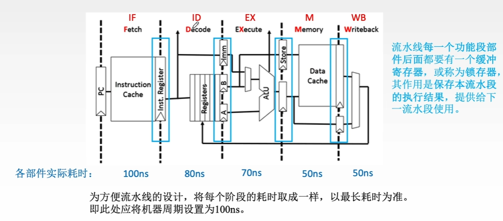
流水线每一个功能段部件后面都要有一个缓冲寄存器，或称为锁存器，其作用是保存本流水段的执行结果,提供给下一流水段使用。
Imm用来存立即数
问题
结构相关(资源冲突)
由于多条指令在同一时刻争用同一资源而形成的冲突称为结构相关。
- 后一相关指令暂停一周期
- 资源重复配置：数据存储器+指令存储器
数据相关
数据相关指在一个程序中,存在必须等前一条指令执行完才能执行后一条指令的情况,则这两条指令即为数据相关。
- 把遇到数据相关的指令及其后续指令都暂停一至几个时钟周期,直到数据相关问题消失后再继续执行。可分为硬件阻塞(stall)和软件插入“NOP”（Null operator）两种方法。
- 数据旁路技术（转发机制）
- 编译优化：通过编译器调整指令顺序来解决数据相关
控制相关（控制冲突）
当流水线遇到转移指令和其他改变PC值的指令而造成断流时，会引起控制相关。
- 转移指令分支预测。简单预测（永远猜true或false）、动态预测（根据历史情况动态调整）
- 预取转移成功和不成功两个控制流方向上的目标指令
- 加快和提前形成条件码
- 提高转移方向的猜准率
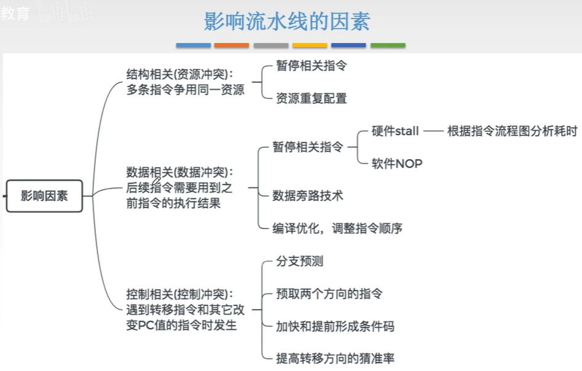
流水线的分类
部件功能级、处理机级和处理机间级流水线
根据流水线使用的级别的不同,流水线可分为部件功能级流水线、处理机级流水线和处理机间流水线。
部件功能级流水就是将复杂的算术逻辑运算组成流水线工作方式。例如,可将浮点加法操作分成求阶差、对阶、尾数相加以及结果规格化等4个子过程。
处理机级流水是把一条指令解释过程分成多个子过程,如前面提到的取指、译码、执行、访存及写回5个子过程。
处理机间流水是一种宏流水,其中每一个处理机完成某一专门任务,各个处理机所得到的结果需存放在与下一个处理机所共享的存储器中。
单功能流水线和多功能流水线
按流水线可以完成的功能,流水线可分为单功能流水线和多功能流水线。
单功能流水线指只能实现一种固定的专门功能的流水线；
多功能流水线指通过各段间的不同连接方式可以同时或不同时地实现多种功能的流水线。
动态流水线和静态流水线
按同一时间内各段之间的连接方式,流水线可分为静态流水线和动态流水线。
静态流水线指在同一时间内,流水线的各段只能按同一种功能的连接方式工作。
动态流水线指在同一时间内,当某些段正在实现某种运算时,另一些段却正在进行另一种运算。这样对提高流水线的效率很有好处,但会使流水线控制变得很复杂。
线性流水线和非线性流水线
按流水线的各个功能段之间是否有反馈信号,流水线可分为线性流水线与非线性流水线。
线性流水线中，从输入到输出，每个功能段只允许经过一次，不存在反馈回路。
非线性流水线存在反馈回路,从输入到输出过程中,某些功能段将数次通过流水线,这种流水线适合进行线性递归的运算。
流水线的多发技术
超标量技术
每个时钟周期内可 并发多条独立指令，要配置多个功能部件
不能调整指令的执行顺序，通过编译优化技术，把可并行执行的指令搭配起来
超流水技术
在一个时钟周期内再分段(3段)
在一个时钟周期内一个功能部件使用多次（3次)
不能调整指令的执行顺序，靠编译程序解决优化问题
超长指令字
由编译程序挖掘出指令间潜在的并行性，将多条能并行操作的指令组合成一条
具有多个操作码字段的超长指令字（可达几百位)，采用 多个处理部件
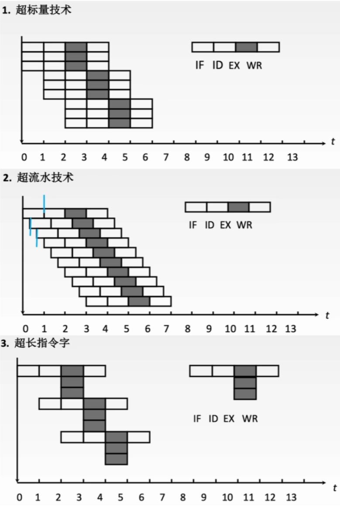
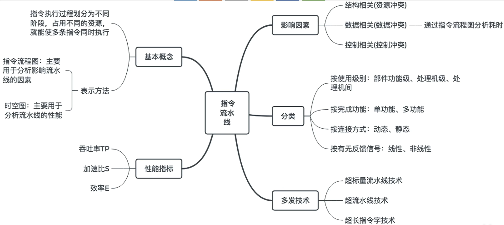
五段式指令流水线
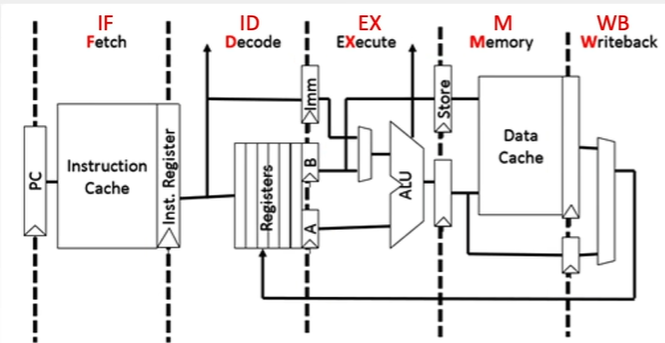
①IF取指→②ID译码&取数→③EX执行→④M访存→⑤WB写回寄存器
考试中常见的五类指令：
运算类指令、LOAD指令、STORE指令、条件转移指令、无条件转移指令
运算类指令
xxxxxxxxxx31ADD Rs,Rd ;加法指令(两个寄存器相加)2ADD #996,Rd ;加法指令(寄存器与立即数相加)3SHL Rd ;算术右移指令①IF取指→②ID译码&取数→③EX执行→④M访存→⑤WB写回寄存器
- IF:根据PC从指令Cache取指令至IF段的锁存器
- ID:取出操作数至ID段锁存器
- EX:运算，将结果存入EX段锁存器
- M：空段
- WB：将运算结果写回指定寄存器
LOAD指令
xxxxxxxxxx11LOAD Rd,996(Rs) ;(996+(Rs))→Rd①IF取指→②ID译码&取数→③EX执行→④M访存→⑤WB写回寄存器
- IF:根据PC从指令Cache取指令至IF段的锁存器
- ID:将基址寄存器的值放到锁存器A,将偏移量的值放到Imm
- EX：运算，得到有效地址
- M:从数据Cache中取数并放入锁存器
- WB：将取出的数写回寄存器
通常，RISC处理器只有“取数LOAD”和“存数STORE”指令才能访问主存
STORE指令
xxxxxxxxxx11STORE Rs,996(Rd) ;Rs→(996+(Rd))①IF取指→②ID译码&取数→③EX执行→④M访存→⑤WB写回寄存器
- IF:根据PC从指令Cache取指令至IF段的锁存器
- ID:将基址寄存器的值放到锁存器A,将偏移量的值放到Imm。将要存的数放到B
- EX:运算,得到有效地址。并将锁存器B的内容放到锁存器 Store。
- M：写入数据Cache
- WB：空段
条件转移指令
①IF取指→②ID译码&取数→③EX执行→④M访存→⑤WB写回寄存器
xxxxxxxxxx21beq Rs,Rt,#偏移量2bne Rs,Rt,#偏移量- IF:根据PC从指令Cache取指令至IF段的锁存器
- ID:进行比较的两个数放入锁存器A、B;偏移量放入 Imm
- EX：运算，比较两个数
- M:将目标PC值写回PC
- WB：空段
很多教材把写回PC的功能段称为"WrPC段” ,其耗时比M段更短,可安排在M段时间内完成
无条件转移指令
①IF取指→②ID译码&取数→③EX执行→④M访存→⑤WB写回寄存器
xxxxxxxxxx11jmp #偏移量- IF:根据PC从指令Cache取指令至IF段的锁存器
- ID:偏移量放入Imm
- EX:将目标PC值写回PC
- M：空段
- WB：空段
多处理器系统
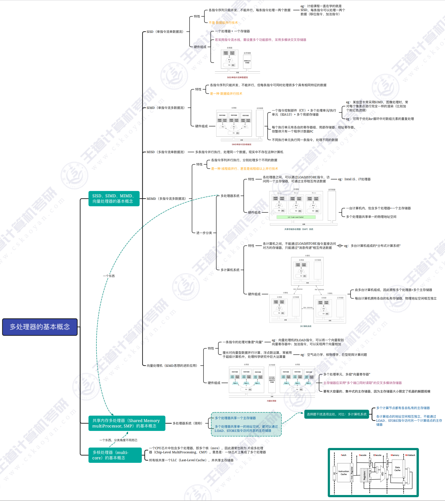
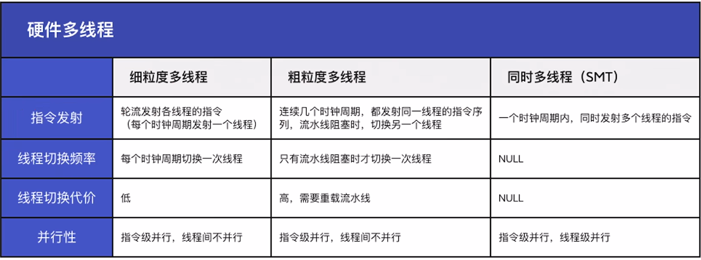